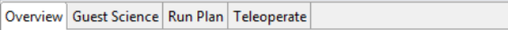
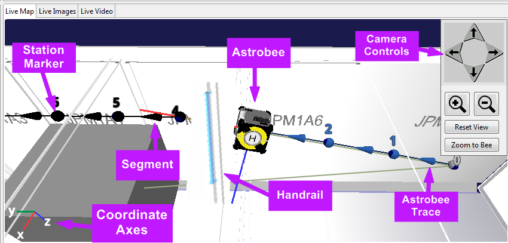
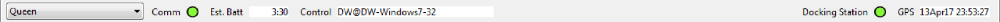
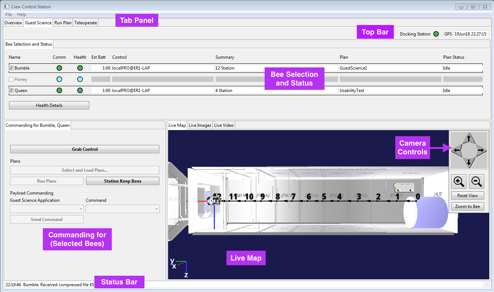
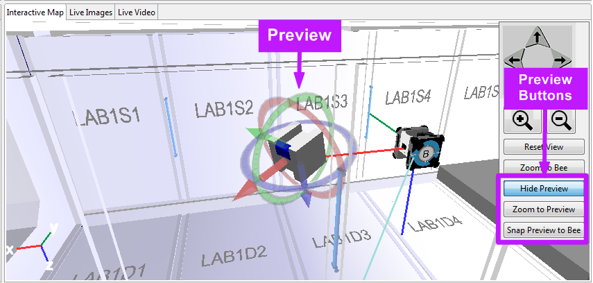

The Astrobee Crew Control Station supports commanding and monitoring of the
Astrobee free-flyers. Astrobees that are awake are commanded via prewritten
Plans, or manually via single commands in Teleoperate mode. Plans consist
of locations called Stations, tasks done at each Station, and Segments that connect the Stations.
The Crew Control Station also commands the Astrobee Docking Station
to wake up Astrobees that are hibernating.
The Overview tab summarizes the states of known Astrobees, and sends wake, grab control, and hibernate
commands.
The Guest Science tab sends Plans and some teleoperate commands to as many as three Astrobees
simultaneously. The Run Plan and Teleoperate tabs allow detailed control and monitoring
of a single Astrobee.
Conditions Necessary for Control of Astrobee
An Astrobee must be awake and have Wi-Fi connectivity in order to connect to the Crew Control Station.
NOTE
An Astrobee that is hibernating must be docked on the Docking Station in order for the Crew Control
Station to wake it up.
Access Control
Control Stations require access control on an Astrobee to send commands to that Astrobee.
An Astrobee that is awake rejects commands sent by Control Stations that do not have access
control on it. When an Astrobee first wakes up, nobody has access control on it.
NOTE
1. Only one Control Station at a time can have access control on an Astrobee.
2. The Crew Control
Station must "grab control" of an Astrobee before sending any commands.
During an activity,
the ground support team may need to grab control of the Astrobee in order to fix a problem. In that
case, the Crew Control Station must grab control again before resuming sending commands.
Astrobee executes Grab Control and Stop commands regardless of whether the
sender has access control. The Docking Station does not track access control, so you do not
need access control to send a Wake command.
Items Common to Multiple Tabs
Tab Panel

Figure 2. Tab Panel
The Tab Panel near the top of the Workbench allows you to switch tabs
to move between various tasks. The Tab Panel includes four tabs:
The Overview tab displays the state of each Astrobee and the state of the Docking Station,
and it sends wake, grab control, and hibernate commands.
The Guest Science tab controls and monitors the execution of Plans on up to three Astrobees,
and it sends specific payload commands.
The Run Plan tab controls and monitors the execution of Plans on one Astrobee.
The Teleoperate tab commands one Astrobee manually, outside of Plan execution.
Live Map

Figure 3. Live Map
The Live Map subtab displays a 3D model of the position of the selected Astrobee
in the USOS, according to the latest telemetry. The Live Map subtab includes:
A model of the USOS, with all rack locations labeled.
Astrobee models at their currently reported locations. Each model has set of red,
green, and blue axes designating the X, Y, and Z directions, respectively, of the Astrobee itself.
Red, or X, designates the front of the Astrobee, and blue, or Z, designates the bottom of the Astrobee.
The Live Map shows a model of each Astrobee that is awake.
X, Y, and Z coordinate axes designating the orientation of the ISS-fixed
coordinate system that the Astrobees use. The Astrobees use the Space Station Analysis coordinate frame,
which has its origin at the truss segment S0.
The Live Map subtab may also display:
Gray keepout zones designating areas Astrobees are not allowed to enter
Blue handrail models
A model of the Astrobee Docking Station
A pastel trace showing the previous path of the Astrobee
When a Plan is loaded on the selected Astrobee, the Live Map subtab displays:
Round Station markers.
Station numbers above each Station. Stations are numbered 0, 1, 2, etc.
Station color codes:
Black: pending
Bright green: active
Gray: completed
Blue: skipped
Lines representing Segments connect the Stations. An arrow along the line
points in the direction of motion. When the Segment is executing, the ID of the
Segment is displayed. Segment IDs list the Stations they connect, for example, Segment 1-2
connects Station 1 to Station 2.
A Camera Controls box floats above the Live Map subtab. If the Crew
Control Station window is moved or resized, you must click on another Control Station
subtab and click again on the Live Map subtab to position the Camera Controls box correctly.
The arrow buttons in the Camera Controls box and on the keyboard
move the camera in the Live Map view.
The magnifying glass buttons zoom in and out.
Reset View returns to the view of the JPM.
Zoom to Bee centers the map on the selected Astrobee.
Leave the cursor over the Camera Controls box
to use the keyboard. During camera movement, the camera stays pointed at the center
of the Live Map view. You can also move the camera by clicking and dragging inside
the Live Map view. To change the center of the view, click and drag using the right
tackpad button.
Top Bar

Figure 4. Top Bar
On the Run Plan and Teleoperation tabs, the Top Bar under the Tab Panel allows the user to select
an Astrobee to monitor and control. The Top Bar also displays summary information.
The Select Astrobee combo displays the names of Astrobees that are awake. Select a name to
connect the Crew Control Station to that Astrobee.
The Comm light is green if the selected Astrobee has communication with the Crew Control Station.
Otherwise the light is cyan, indicating that no telemetry is being received and no commands can be sent.
Est Batt displays the approximate number of minutes that the selected Astrobee
can operate before needing to recharge. If more than one hour is left, the time is displayed as hours and minutes.
Control displays the ID of the Control Station that currently has access control
on the selected robot. When an Astrobee first wakes up, nobody has control on it. If the Control field does not match the
id of the user of the Crew Control Station, only Grab Control and Stop commands can be sent from the Crew Control Station
to that Astrobee.
The Docking Station light is green if the Docking Station is powered and connected.
It is cyan otherwise.
GPS displays the date and time.
Grab Control Button
All tabs have a Grab Control button that grabs access control on the selected Astrobee(s) if the Crew Control
Station does not already have access control.
Health
Figure 5. Health subtab.
The Health subtab, on the Run Plan and Teleoperate tabs, displays status information
about the Astrobee selected in the Top Bar. The status information may include the following:
A row, highlighted in orange, indicating if a particular subsystem is disabled. Each system that is unable to function is listed
on a separate row.
The Operating State of the Astrobee may be Ready, Plan Execution, Teleoperation,
Auto Return, or Fault. In some Operating States, some commands are not available.
The Mobility State of the Astrobee may be Drifting (propulsion off), Stopping, Stopped (station keeping),
Flying, Docking, Docked, Undocking, Perching, Perched, or Unperching. Docking, Undocking, Perching, and Unperching states include
a number to indicate the progress of the Astrobee through the process. In some Mobility States, some commands are not available.
Plan Name is the name of the Plan currently loaded on the selected Astrobee. Each Astrobee can load
one Plan at a time.
Plan Status may be Idle, Executing, Paused, or Error. When a Plan is initially loaded, the Plan
Status is Paused. When the Plan finishes executing, the Plan Status is Idle and a new Plan must be loaded.
Live Images
The Live Images subtab displays a succession of images from the selected Astrobee's Dock camera or
Navigation camera. Cameras can be commanded to stream images via Plan or via Teleoperate commands.
The info label on the Live Images subtab displays the sequence number of the image currently displayed. An icon
at the left of the subtab indicates whether the chosen camera points forward (Navigation camera)
or backward (Dock camera). On the Guest Science tab, the Live Images subtab includes a dropdown menu to select
an Astrobee from which to view images.
Figure 6. Live Images subtab, as it appears on the Guest Science tab.
Live Video
The Live Video subtab streams video from the Science camera
on the selected Astrobee. The Science camera can be commanded to stream images via a Plan or via
Teleoperate commands. On the Guest Science tab, the Live Video subtab includes a dropdown menu to select
an Astrobee from which to view images.
Figure 7. Live Video subtab, as it appears on the Guest Science tab.
Status Bar
The Status Bar at the bottom of the Crew Control Station displays the latest message
sent or received from any Astrobee or the Docking Station.
Overview Tab
Figure 8. Overview Tab
The Overview Tab summarizes the states of known Astrobees, and sends wake commands to the Docking Station.
It includes the following unique subtabs:
Bee Status
The Bee Status subtab displays a status summary
for each connected Astrobee. Each row has the following items:
Name is the name of the Astrobee described by the row.
The Comm light is green if that Astrobee is connected and cyan otherwise.
The Health light is green if all Astrobee systems are functional and orange
if any subsystems are disabled. The health light is cyan if the Astrobee is not connected.
Est Batt displays the approximate number of minutes left
that the Astrobee can operate before needing to recharge.
If more than one hour is left, time is displayed as hours and minutes.
Control shows the ID of the Control Station that has access control on the Astrobee.
An Astrobee
rejects most commands from Control Stations that do not have access control on it.
Only one Control Station can have control of each Astrobee at one time.
Docking Station Status and Commanding
The Docking Station Status and Commanding subtab displays the status of
any Astrobees on the Docking Station, and it sends wake commands to Astrobees hibernating
on the Docking Station.
The Docking Station has two berths. Each berth accommodates one
Astrobee, and that Astrobee may be awake, hibernating, or unpowered. The Berth One and Berth Two subpanels
display the name of the Occupant of that berth (or "Vacant") and the Status of the occupant if the berth is occupied.
If the Astrobee on a berth is powered off, the Docking Station
reports the Occupant of that berth as "Unknown", with Status "Unpowered". An unpowered Astrobee cannot be woken
up by the Control Station.
The Wake Commanding section lists the Astrobees that are hibernating on the Docking Station,
and lets the user select one to wake.
The Hibernate Commanding section lists the Astrobees that are awake on the Docking Station,
and lets the user grab control of or hibernate the selected Astrobee. The Hibernate button
puts the selected Astrobee into a powered down state in which it can accept only
the Wake command.
NOTE
If an Astrobee is hibernated while it is not docked at the Docking Station, it will not be
able to be awakened via the Crew Control Station. It will need to be awakened via the hardware Wake button,
or docked manually.
Guest Science Tab

Figure 9. Guest Science Tab
The Guest Science Tab controls up to three Astrobees simultaneously.
It is used for Guest Science experiments, and unlike the rest of the Crew
Control Station, it is not intended to be operated
without a procedure. It has the following unique subtabs:
Bee Selection and Status
The Bee Selection and Status subtab displays a status summary
for each connected Astrobee. Each row has the following fields:
Name shows the name of the Astrobee described by the row. Check the
checkbox to the left of the name to send commands to that Astrobee.
Est Batt displays the approximate number of minutes remaining
that the Astrobee can operate before needing to recharge.
If more than one hour is left, the time is displayed as hours and minutes.
Control shows the ID of the Control Station that has access control on that Astrobee.
Astrobees reject commands other than Grab Control and Stop from entities who
do not have control. Only one entity can have control of each Astrobee at
one time.
The Health light is green if all the Astrobee's systems are functional and orange
if any subsystems are disabled. The health light is cyan if the Astrobee is not connected.
The Summary field displays messages from Guest Science
Applications that are running on the Astrobee. If Guest Science has not
sent a message, and the Astrobee is running a Plan, the Summary field displays
the title of the current step in the Plan. If no Plan is running and no message has been sent, the field is blank.
Plan shows the name of the Plan currently loaded on the
Astrobee. Each Astrobee can load one Plan at a time.
Plan Status may be Idle, Executing, Paused, or Error. When a Plan is initially loaded, the Plan
Status is Paused. When the Plan finishes executing, the Plan Status is Idle and a new Plan must be loaded.
The Health Details button opens a dialog that displays a Health
listing for each of the selected Astrobees.
Commanding for (Selected Astrobees)
The Commanding for (Selected Astrobees) subtab sends commands to the
Astrobees that are selected in the Bee Selection and Status subtab. The
names of the Astrobees it will send commands to are listed in the title. The
following commands are available:
Grab Control grabs control of the selected Astrobees. If the Crew Control Station
does not have access control on all the selected Astrobees, only the Grab Control
button is enabled.
Select and Load Plans ... opens a dialog box from which to select Plan files from the
file system, to load onto the selected Astrobees.
Run starts execution of the Plans that are loaded on the selected Astrobees. If not
all selected Astrobees have Plans that are currently Paused, this command is not
available.
Station Keep Bee(s) commands the selected Astrobees to cancel any movement commands
and station keep at their current positions. An awake Astrobee always executes a command to station keep
even if the command comes from a Crew Control Station that does not have access control.
The Guest Science Application dropdown selects an application that is
loaded on the selected Astrobee.
The Command dropdown selects a Command to send to the selected
Guest Science application.
Send Command sends the selected command to the selected Guest Science
application on the selected Astrobees.
Run Plan Tab
Figure 10. Run Plan Tab
The Run Plan Tab controls and monitors the execution of Plans on one Astrobee, which is selected from the
dropdown in the upper left. The Run Plan Tab has the following unique subtabs:
Bee Commanding
The Bee Commanding subtab has the following items:
Select Plan ... opens a file dialog from which to choose a
Plan file to load to the selected Astrobee.
When a valid Plan is selected, Load uploads the Plan file to the selected
Astrobee. Once a Plan is loaded, the Load button disables and the Live Plan subtab populates with
a list of the steps in the Plan.
Run starts or resumes execution of the loaded Plan on the selected Astrobee when the
Plan Status is Paused. When a Plan is first loaded to the Astrobee, its Plan Status is Paused.
Pause pauses execution of the Plan on the selected Astrobee.
Skip Step skips a step in the Plan when the Plan Status is Paused. Selecting
Skip Step multiple times skips multiple steps in the Plan. When you click Run, execution
resumes at the step you have skipped to.
The Description box displays a short summary of the selected Plan.
Live Plan
The Live Plan subtab displays details of the Plan that the selected Astrobee is executing.
The Plan Name field shows the name of the plan that is currently loaded on the Astrobee.
The Plan Status field shows the current status of the plan on the Astrobee. If no Plan is loaded,
the Plan Status is Idle.
The Total Elapsed Time field counts the hours, minutes, and seconds that the Plan
has been executing.
The Plan Table displays the contents of the Plan currently loaded on the selected Astrobee.
The Duration column lists the hours, minutes, and seconds each step took to complete. If the
step was momentary, for instance turning on a camera, no duration is listed. The Success
column lists Complete, Failed, or Skipped for each step in the Plan as the Plan is executed.
Teleoperate Tab
The Teleoperation Tab sends single commands to the selected Astrobee. It contains the
following unique subtabs:
Figure 11. Teleoperate Tab
Bee Commanding
The Bee Commanding subtab sends commands that move the position and
orientation of the selected Astrobee. It has the following sections:
Initialization
The Initialization section in the Bee Commanding subtab
includes the Grab Control button discussed above.
Locations
The Locations section includes a locations dropdown, from which
to select a named location (coordinate and orientation) in the ISS. When you select a location,
the Manual Move Inputs fields automatically populate with the coordinates and orientation
of the bookmark, eg. x = 1.3 m, y = 0.2 m, z = 0.8, roll = 0 degrees,
pitch = 0 degrees, yaw = 90 degrees.
Manual Move Inputs
The Manual Move Inputs section in the Bee Commanding subtab contains text fields to enter coordinates
of where to send Astrobee when the Move button is clicked. The Aft-Forward, Port-Starboard, and
Overhead-Deck coordinates align with the ISS axes. The Roll, Pitch, and Yaw inputs also use the ISS coordinate
system. The Astrobees use the Space Station Analysis coordinate system, the origin of which is at truss segment S0.
Use the arrow buttons on either side of each text box to make small changes to the position. Linear
measurements are incremented by 0.05 meters and angles are incremented by 15 degrees.
To enter a large number, type the number of meters into the box and adjust the tenths of meters using
the arrow buttons.
Options
The Options section in the Bee Commanding subtab sets the list of options to send to the
Astrobee when the
Apply Options button is clicked. If the checkbox to the left of the option is
checked, the Apply Options button will send a command to turn on that option.
If there is a green checkmark to the right of the option, the Astrobee already has
that option turned on. Options include:
Face Forward requires the Astrobee to face the direction of motion.
Unchecking this option allows the Astrobee to fly sideways or backwards, which may be
desirable to collect specific video or science data. However, the Astrobee does not
have cameras pointing in all directions, so it must be monitored closely when
flying with Face Forward off so that it does not collide with an obstacle.
Check Obstacles requires the Astrobee to stop moving and station keep if
it detects an object in its planned flight path. It may be necessary to turn off
this option if the Astrobee detects a ghost obstacle and gets stuck.
Check Keepouts requires the Astrobee to stop before entering
any keepout zone (keepout zones are designated with gray boxes in the Live Map subtab).
It may be necessary to turn this option off if the Astrobee accidentally gets
knocked into a keepout zone.
Apply Options commands the Astrobee to turn on the options that
are checked in the Options section and turn off the options that are not checked in
the Options section.
NOTE
The Face Forward, Check Obstacles, and Check Keepouts options should usually be turned on.
Commands
The Commands section in the Bee Commanding subtab has buttons to send commands to the selected Astrobee.
It includes these buttons:
Station Keep Bee commands the Astrobee to cancel any movement commands and
station keep at its current position.
Move commands the Astrobee to go to the position specified
in the Manual Move Inputs section.
Perching Arm
Figure 12. Perching Arm subtab
The Perching Arm subtab sends commands related to the Astrobee's Perching
Arm. The Perching Arm is designed to grasp a handrail
and secure the Astrobee while it conserves power by turning off its propulsion
system. The Perching Arm subtab includes:
Initialization
The Initialization section in the Perching Arm subtab
includes the Grab Control button discussed above.
Manual Inputs
The Manual Inputs section in the Perching Arm subtab contains text fields
to enter angles for the pan and tilt joints of the arm.
The Pan and Tilt button commands the Astrobee perching arm to move to the
angles specified. The Pan
and Tilt command is intended to be sent only when the Astrobee is perched on a
handrail and providing video. The input may be moved in 10 degree increments by
the arrows on either side of the text field, or the desired angle may be typed into the text field
directly. When pan and tilt are both zero, the arm is fully extended.
Options
The Options section in the Perching Arm subtab includes the Reacquire Position button.
If the Astrobee is accidentally knocked off its perch on a handrail, it may lose its
internal location state. In that case, the Reacquire Position command tells the
Astrobee to recalculate its location from scratch.
Commands
The Commands section in the Perching Arm subtab has buttons to send commands to the selected Astrobee.
It includes:
Station Keep Bee commands the Astrobee to cancel any movement commands and
station keep at its current position.
Perch commands the Astrobee to deploy its perching arm and
grasp a handrail that is directly in front of it. The command
will fail if the Astrobee is not lined up correctly with the handrail.
Docking
Figure 13. Docking subtab
The Docking subtab sends commands related to Docking. It includes these sections:
Initialization
The Initialization section in the Docking subtab
includes the Grab Control button discussed above.
Options
The Options section in the Docking subtab includes the Automatically Return to Docking
Station when Battery Low checkbox.
This option causes Astrobee to automatically return to the Docking Station when the following
conditions are met: the Astrobee is out of contact with a Control Station, it
is not perched, and it is running low on power. Disable this behavior by unchecking Automatically
Return to Docking Station when Battery Low
and clicking the Apply Option button. If the Astrobee has the option turned on,
there is a green checkmark to the right of the option title.
Commands
The Commands section in the Docking subtab has buttons to send commands to the selected Astrobee.
It includes:
The Station Keep Bee button commands the Astrobee to cancel any movement commands and
station keep at its current position.
The Send Bee to Docking Station button commands the Astrobee to immediately return
to the Docking Station and dock itself. The Astrobee can execute the Dock Automatically command from
anywhere in the USOS. The Astrobee automatically chooses an unoccupied berth
on the Docking Station. The Astrobee plans a trajectory assuming the
modules are unobstructed. If it detects an obstacle in its planned path, it will
stop and wait for the obstacle to move.
Interactive Map
The Interactive Map subtab, like the Live Map subtab on other tabs,
displays a 3D model of the selected Astrobee in the USOS.
The Interactive Map also includes a white Preview model with
draggable arrows. The Preview shows the pose that is indicated by the Manual Move Inputs section
of the Bee Commanding subtab; i.e., the Preview shows where the Move button will send the Astrobee.
If the Preview intersects a keepout or a wall, and the Check Keepouts
option is checked, the Preview turns orange to indicate a potential collision.
The Preview has color coded arrows and rings that can be dragged to move it to
the desired position. Red indicates Astrobee's forward direction and blue indicates Astrobee's
down direction. The Manual Move Inputs fields will update automatically
when the Preview is dragged by its arrows.

Figure 14. Interactive Map
The Camera Controls box in the Interactive Map has these additional buttons:
Show or Hide Preview displays or hides the white Preview model
Zoom to Preview centers the map on the Preview model.
Snap Preview to Bee moves the Preview to the current position of the selected Astrobee.
The coordinates in the Manual Move Inputs section will update accordingly.
Miscellaneous Commands
Figure 15. Miscellaneous Commands Subtab
The Miscellaneous Commands subtab may have different command options, depending
on the activity. The default commands control the camera. Select
the name of the camera (Dock, Navigation, or Science) in the first
dropdown, the desired option in the second dropdown, and send
the command by clicking the Send button at the right of the
row.
Plan Editor Tab
Figure 16. Plan Editor Tab
Create A Plan
From the Plan Editor Tab, go to File -> New Plan
Known bug: If you are on a Mac and the top menu bar does not say "FreeFlyer OCU", click on another window (for instance a Finder window) and then select the Workbench again and the menu will appear correctly.
Enter a name for the plan and click Save
Known bug: error about SWT key 13 when you hit enter instead of clicking Save. Ignore the error and continue.
Set inertia and operating limits configuration files for the plan by clicking on the plan name in the table and then selecting from the drop-down menus in the lower left corner.
Add plan elements (see below)
When you have finished making the plan, click the Validate button
The workbench will create trapezoidal waypoints for each segment
The workbench will check that the plan obeys keep-out and keep-in zones.
When the plan has been validated, go to File -> Save Plan. Saving the plan will also validate it, if it is not already validated.
Add Stations
Click the "Add" button. A new Station will be created.
If a Station is selected, the new Station will be between the selected Station and the next Station
If a Segment is selected, the new Station will be created in the middle of the Segment
If the Plan is selected or the last Station is selected, the new Station will be created at the position of the last Station in the plan.
Right-click on an item in the Plan Editor
When the Plan is selected, you can "Append Station" to the end of the plan
When a Station is selected, you can "Append Station" to the end of the plan or "Insert Station" before this Station
When a Segment is selected, you can "Insert Station" in this Segment
Click "Add via 3d View" button. A translucent plane will show in the 3d view.
Click on the plane to add Stations where you click. New Stations are appended to the end of the Plan.
Change the height of the plane using the "Plane Adjustment: Z" text box.
When you are done adding Stations, click "Exit Add via 3d View" button.
Segments are created automatically when you add Stations.
Edit Plan Elements
Plan
Select the Plan itself by clicking the plan name in the Plan Editor table.
When the Plan is selected, you can change the inertia and operating limits configurations
Stations
Select a Station by clicking on the box in the 3D view or on the row in the table in the Plan Editor
When a Station is selected, you can do the following:
Move the station
"Location Based" tab: Set position according to ISS location coding.
"Coordinate Based" tab: use up and down arrows to adjust x, y, z, roll, pitch, yaw, or type numbers directly into the text boxes
"Coordinate Based" tab: select Drag to Translate or Drag to Rotate checkbox to display draggable arrows on the selected station.
"Bookmarks" tab: select the name of a bookmark from the dropdown menu and the Station will jump to the location of the Bookmark.
Add commands to the station
Click on "Commands" tab.
Select a command from the "Select command" dropdown. The selected command will be added to the plan.
You can delete commands with the "Delete" button, and you can reorder or delete them by right-clicking on them in the table.
Delete the Station
Click the "Delete" button
Right click on the row in the Plan Editor, and choose "Delete"
Reorder the station (if the plan has multiple stations)
Right click on the row in the Plan Editor, and choose "Reorder Down" or "Reorder Up"
Insert a Station halfway between the selected and the previous station
Right click on the row in the Plan Editor and choose "Insert Station"
Insert a Station halfway between the selected and the next station
Select the Station and click the "Add" button
Segments
Select a Segment by clicking on the cone in the 3D view or on the row in the table in the Plan Editor
When a Segment is selected, you can do the following:
Change the maximum speed of the segment in the Plan Editor
Uncheck Face Forward to tell the robot it doesn't need to face the direction of motion during this Segment
If you run with -engineering, you can also change acceleration, and angular velocity and acceleration limits.
Commands
Select a command by clicking on the line in the table in the Plan Editor
Undo
Some actions can be reversed by going to Edit -> Undo
Adding a station and deleting a station can be undone
Moving a station via the Coordinate Based tab can be undone.
Manage Bookmarks
Under View menu, select Open Bookmark Manager
To delete a bookmark:
Select the bookmark from the drop-down labeled Delete Bookmark
Click Delete.
To create a new Bookmark:
Open a plan and select a Station in the plan.
Adjust the position of the current station using the Location Based or Coordinate Based tabs
Click on the Bookmarks tab and click "Make Bookmark..."
Enter a name for the new bookmark and click OK.
Terminology
Access Control - Control Stations require access control on an Astrobee to send commands to that Astrobee
Astrobee - One of three free-flying robots
Awake - Astrobee is powered and ready to accept commands
Docking Station - Where Astrobees are recharged
Drifting - Mobility State where Astrobee's propulsion system is turned off
Face Forward - Option that requires Astrobee to face its direction of motion
Guest Science Application - Additional software running on Astrobee for a particular investigation
Keepouts - Areas of the ISS which Astrobee must not enter
Hibernate - Astrobee is powered on but will only respond to the Wake command
Images - Still pictures that are sent from the Navigation and Dock cameras on Astrobee
Location - Preset coordinates with associated orientations to send Astrobee to
Mobility State - Describes whether Astrobee is flying, drifting, station keeping, docking, or perching
Obstacles - Obstructions that Astrobee detects in its path as it is moving. Not displayed in the Crew Control Station.
Operating State - Indicates whether Astrobee is executing a Plan, executing a teleoperate command, or ready to accept commands
Payload - Hardware attached to Astrobee for a specific experiment
Perching Arm - Astrobee's original arm, designed to grasp a handrail
Plan - Sequence of Stations, Segments, and Commands to complete at the Stations
Plan State - Describes the currently loaded Plan, and can be paused, executing, or idle
Preview - Element in the 3D view that shows where the Move command would send the Astrobee
Streaming Video - Video sent from the Science camera on Astrobee
Symbols
Astrobees
Bumble
Honey
Queen
Teleoperate Preview
No Collision
Potential Collision
Plan Stations
Pending
Skipped
Completed
Plan Segments
Pending
Running
Skipped
Completed
Other Objects
Dock
Keepout Zone
Handrail
Coordinate Axes
Hot Keys
F1 - Open Help Document
Ctrl Q - Quit
Ctrl E - Open Overview Tab
Ctrl G - Open Guest Science Tab
Ctrl P - Open Run Plan Tab
Ctrl T - Open Teleoperate Tab